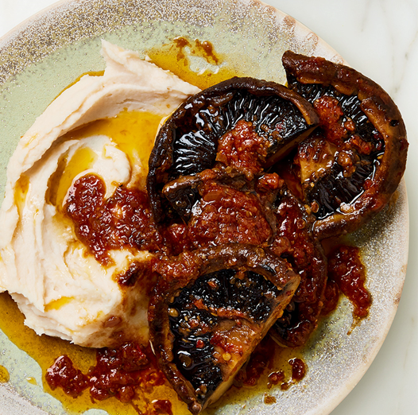

Portobello steaks and butter bean mash

What gives the mushrooms their verve is the chillies and spices and all the flavoured oil that coats them. You’ll make more oil than you need here; keep it refrigerated in a sealed container to spoon over grilled vegetables, noodles, meat or fish. Serve this with some sautéed greens, if you like.
Portobello steaks:
Butter bean mash:
Preheat the oven to 150°C fan.
Put all the ingredients for the steaks and 1 tablespoon of flaked salt into a large ovenproof saucepan, for which you have a lid. Arrange the mushrooms so they are domed side up, then top with a piece of parchment paper, pushing it down to cover all the ingredients. Cover with the lid, then transfer to the oven for 1 hour. Turn the mushrooms over, replacing the paper and lid, and return to the oven for 20 minutes more, or until the mushrooms are very tender but not falling apart. Use a pair of tongs to transfer the mushrooms to a chopping board, then cut them in half and set aside.
Use a spoon to remove the onion, garlic and chilli (discarding the stem) – don’t worry if you scoop up some of the spices and oil. Put them into the small bowl of a food processor and blitz until smooth. Return the blitzed onion mixture to the saucepan, along with the mushroom halves, and place on a medium-high heat. Cook for about 5 minutes, for all the flavours to come together.
While the mushrooms are cooking, make the mash by putting the beans into a food processor along with the lemon juice, olive oil, ½ teaspoon flaked salt and 2 tablespoons of water. Blitz until completely smooth. Transfer to a medium saucepan and cook on a medium-high heat for about 3 minutes, stirring, until warmed through.
To serve, divide the butter bean mash between four plates. Top with four mushroom halves per plate and spoon over a generous amount of the oil and its accompanying aromatics (you won’t need all of it, though – see intro).